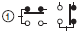

Level Switches
These devices equip electrodes to detect liquid levels. They have been widely used in water works and sewers for buildings and housing complexes, industrial facilities and equipment, water treatment plants and sewage treatment facilities, and many other applications.
|
|
Features |
|
|
|
| Engineering Data | Further Information |
|
|
|
-
 Level Controller Selection Criteria
Level Controller Selection Criteria
-
Selection Criteria for 61F Level Controllers
-
Level Controller Installation
-
FAQs
Level Controller Selection Criteria
Categories (Reference Information)
Categorized by Fluid Types
| Applicable liquids | Electrode | Electrode Holders | Relay Unit |
| Acid/alkaline solutions | Select electrodes based on corrosion resistance Table 4 of below. (Separators are not used.) | Electrodes in BS-IT are outlined in Table 4 of below. Separate each electrode with insulation. | Low-sensitivity 61F-[][]ND Level Controller (61F-11ND or equivalent, however depending on the cable length, the long-distance 61F-11NL Level Controller may be required.) |
| Boiler | SUS316 (The materials used make the water alkaline.) | BS-1 (Subject to high temperature and pressure.) | Standard 61F-[][] Level Controller |
| Tap water | SUS304, SUS316 | PS, BF. No other specific requirements. | Standard 61F-[][] Level Controller, but when it is over a long distance, use a long-distance 61F-[][]L Level Controller. |
| Pure water (Ion- exchanged water) | Titanium (Maintains the purity level of water.) | BS-1T Titanium | May require a high-sensitivity Level Controller depending on conductivity 61F- [][]NH (61F-11NH) Ultra-high-sensitivity 61F-UHS Level Controller |
| Bubbles (Detection) | SUS304, SUS316, Titanium (Separators are not used.) | PS, BF | High-sensitivity 61F-GP-NH Level Controller or equivalent |
| Bubbles (No detection) | As above (Separators are not used.) | As above | Low-sensitivity 61F-[][]ND Level Controller |
| Wastewater | SUS304 (Low sainity) (Separators are not used.) | BF-1 is used with each electrodes separated. | Low-sensitivity 61F-[][]ND Level Controller |
| Oil mixed in water | SUS304 | PS, BF use pipes to guard against the oil. | Standard 61F-[][] Level Controller |
| Steam | SUS316 | PS-1, BF-1 If there is enough pressure to be able to separate the electrodes, use the BS-1. | Standard 61F-[][] Level Controller |
Categorized by Installation Conditions of Electrodes
| Installation Condition | Electrode | Electrode Holder |
| Confined space | PH underwater electrodes | --- |
| Protect against rainwater | SUS304, SUS316 | PS + F03-11 Protective Cover + F03-12 Frame |
| Objects from wastewater (i.e., clothing) get tangled | SUS304 | The BF-1; separates the distance between electrode holders |
| Wastewater, contaminated water, or areas with clusters of grease | SUS304 or SUS316 | As above |
| Elevated tank | SUS304 or SUS316 | PS |
| Ground tank | SUS304 or SUS316, F03-05 Electrode Band, PH underwater electrodes | PS |
| Sewer, drains (manhole) | SUS304, SUS316 | PS (Place the electrodes in a pipe in areas that accumulate grease, e.g., underground, factory pits) |
| Septic tank (Flushed matter) | SUS304 | BF-1 |
| Measurements at a depth like water wells | PH underwater electrodes | --- |
| Areas where ice forms | PH underwater electrodes | --- |
| High temperature (hot water tank) | SUS316 | Temperatures under 50°C, BS-1S2 No model is suitable for temperatures above 250°C (Must be made by the user.) |
Selection Criteria for 61F Level Controllers
Specific Resistance and Model Selection Criteria
The limit for specific resistance of liquid that can be controlled with a generic Level Controller is 30 kΩ·cm when using a PS-3S Electrode Holder within a submersion depth of 30 mm. For any fluid with specific resistance higher than this value, use a high-sensitivity Level Controller (H type). (See note.)
Table 1 and Table 2 shown on the right and Table 3 on the next page show specific resistances for typical liquids. Use these when selecting a model.
Note 1.The high-sensitivity Level Controllers may suffer from resetting problems when used with certain types of water. In some cases it cannot substitute for the standard Level Controllers or Low-sensitivity Level Controllers. Be sure to select the model appropriate for the application.
Note: 2.The circuit configuration of the High-sensitivity 61F-[]H Level Controller is designed so that the relay is reset when there is water present between the electrodes. When power supply voltage is applied, the internal relay switches to the NO contact and, when there is conductivity between electrodes E1 and E3, the relay is reset to the NC contact.
This contact operation is reversed for models other than the high-sensitivity models. Although the internal relay operates (and operation indicator turns ON) simply when the power supply voltage is applied, this operation is normal. (The relay in the 61F-[]NH energizes when there is water present between the electrodes.)
Note:For the ultra high-sensitivity variable 61F-HSL Level Controller, malfunction due to electric corrosion may occur in the DC electrode circuit. Be careful not to use the product where current constantly flows between electrodes.
Table 1: Specific Resistance of Water (General Guideline)
| Type of water | Specific resistance |
| Tap water | 5 to 10 kΩcm |
| Well water | 2 to 5 kΩcm |
| River water | 5 to 15 kΩcm |
| Rainwater | 15 to 25 kΩcm |
| Seawater | 0.03 kΩcm |
| Sewage | 0.5 to 2 kΩcm |
| Distilled water | 250 to 300 kΩcm min. |
Table 2: Detectable Specific Resistance (Guideline)
| Type of use | Specific resistance (recommended value) |
| Long distance (4 km) | 5 kΩcm max. |
| Long distance (2 km) | 10 kΩcm max. |
| Low sensitivity | 10 kΩcm max. |
| Two-wire | 10 kΩcm max. |
| General-purpose | 10 to 30 kΩcm |
| High-temperature | 10 to 30 kΩcm |
| High-sensitivity (COMPACT plug-in type) | 30 to 200 kΩcm |
| High-sensitivity (base type) | 30 to 300 kΩcm |
| Ultra high-sensitivity | 100 kΩ to 10 MΩcm |
Note:The specific resistance of liquids are those that can be controlled using the PS-3S when the submersion depth is 30 mm or less.
Conductance is a scale describing how easily current can flow. The relationship of Conductance and resistance is defined by the following equation.
Table 1 can be modified to contain the corresponding conductance as shown in Table 1A.
Table 1A: Specific Conductance of Water (Guideline)
| Type of water | Specific Conductance |
| Tap water | 100 to 200 μS/cm |
| Well water | 200 to 500 μS/cm |
| River water | 67 to 200 μS/cm |
| Rainwater | 40 to 67 μS/cm |
| Seawater | 33,300 μS/cm |
| Sewage | 500 to 2,000 μS/cm |
| Distilled water | 3.3 to 4 μS/cm max. |
Table 3: Specific Resistance of Various Liquids
| Type of liquid | Tempera-ture (°C) | Concen-tration (%) | Specific resistance (Ω・cm) |
| Beer (Company A) Port wine (Company K) Whisky (Company T) Sake (Company K First grade quality) | 12 12 12 12 | --- --- --- --- | 830.0 966.0 14,608.0 1,743.0 |
| Silver nitrate AgNO3 | 18 | 5.0 60.0 | 39.5 4.8 |
| Barium hydroxide Ba (OH)2 | 18 | 1.25 2.5 | 40.0 20.9 |
| Calcium chloride CaCl2 | 18 | 5.0 20.0 35.0 | 15.6 5.8 7.3 |
| Cadmium chloride CdCl2 | 18 | 1.0 20.0 50.0 | 181.0 33.5 73.0 |
| Cadmium sulfate CdSO4 | 18 | 1.0 5.0 35.0 | 240.0 68.5 23.8 |
| Nitric acid HNO3 | 18 15 15 | 5.0 31.0 62.0 | 3.9 1.3 2.0 |
| Phosphoric acid H3PO4 | 15 | 10.0 60.0 87.0 | 17.7 5.5 14.1 |
| Sulphuric acid H2SO4 | 18 | 5.0 30.0 97.0 99.4 | 4.8 1.4 12.5 117.6 |
| Potassium bromide KBr | 15 | 5.0 36.0 | 14.5 2.9 |
| Potassium chloride KCI | 18 | 5.0 21.0 | 14.5 3.6 |
| Potassium chlorate KClO3 | 15 | 5.0 | 27.2 |
| Potassium cyanide KCN | 15 | 3.25 6.5 | 19.0 9.8 |
| Potassium carbonate K2CO3 | 15 | 5.0 30.0 50.0 | 17.8 4.5 6.8 |
| Potassium fluoride KF | 18 | 5.0 40.0 | 15.3 4.0 |
| Potassium iodide KI | 18 | 5.0 55.0 | 31.4 2.4 |
| Potassium nitrate KNO3 | 18 | 5.0 22.0 | 22.1 6.2 |
| Potassium hydroxide KOH | 15 | 4.2 33.6 42.0 | 6.8 1.9 2.4 |
| Potassium monosulfide K2S | 18 | 3.18 29.97 47.26 | 11.8 2.2 3.9 |
| Copper sulfate CuSO4 | 18 | 2.5 17.5 | 92.6 21.8 |
| Ferrous sulfate FeSO4 | 18 | 0.5 3.0 | 65.0 21.7 |
| Hydrogen bromide HBr | 15 | 5.0 15.0 | 5.2 2.0 |
| Hydrochloric acid HCl | 15 | 5.0 20.0 40.0 | 2.5 1.3 1.9 |
| Hydrogen fluoride HF | 18 | 0.004 0.015 0.242 29.8 | 4,000.0 2,000.0 275.0 2.9 |
| Mercuric chloride HgCl2 | 18 | 0.229 5.08 | 22,727.0 2,375.0 |
| Hydrogen iodide HI | 15 | 5.0 | 7.5 |
| Potassium sulfate K2SO4 | 18 | 5.0 10.0 | 21.8 11.6 |
| Sodium chloride NaCl | 18 | 5.0 25.0 | 14.9 5.6 |
| Sodium carbonate Na2CO3 | 18 | 5.0 15.0 | 22.2 12.0 |
| Sodium iodide NaI | 18 | 5.0 40.0 | 33.6 4.7 |
| Sodium nitrate NaNO3 | 18 | 5.0 30.0 | 22.9 6.2 |
| Sodium hydroxide NaOH | 15 | 2.5 20.0 42.0 | 9.2 2.9 8.4 |
| Sodium sulfate Na2SO4 | 18 | 5.0 15.0 | 24.4 11.3 |
| Ammonia NH3 | 15 | 0.1 4.01 3.05 | 3,984.0 913.0 5,181.0 |
| Ammonium chloride NH4Cl | 18 | 5.0 25.0 | 50.5 2.5 |
| Ammonium nitrate NH4NO3 | 15 | 5.0 50.0 | 16.9 2.7 |
| Ammonium sulfate (NH4)2SO4 | 15 | 5.0 31.0 | 18.1 4.3 |
| Zinc chloride ZnCl2 | 15 | 2.5 30.0 60.0 | 36.2 10.8 27.1 |
| Zinc sulfate ZNSO4 | 18 | 5.0 30.0 | 52.4 22.5 |
Selecting Electrode Material According to Resistance against Corrosion
To get the most out of the electrodes, refer to Table 4 to select the best material.
Table 4: Resistance to Corrosion of Electrode Material
| AqueousSolution | Electrodematerial | ||||||
| Type | Concen- tration (%) | Temperature (°C) | SUS | SUS | Titanium | HAS | HAS |
| 304 | 316 | B | C | ||||
| Sulphurous acid H2SO3 | 6 | 30 | E | C | A | B | B |
| Sulphuric acid H2SO4 | 1 | 30 | A | A | A | A | A |
| 1 | BP | E | D | E | B | C | |
| 3 | 30 | B | A | A | A | A | |
| 3 | BP | E | E | E | C | C | |
| 5 | 30 | D | B | D | B | A | |
| 5 | BP | E | E | E | D | D | |
| 10 | 30 | E | C | E | A | A | |
| 10 | BP | E | E | D | C | E | |
| 20 | 30 | E | E | C | C | B | |
| 20 | BP | E | E | D | D | E | |
| 40 | 30 | E | E | D | B | B | |
| 40 | BP | E | E | D | E | E | |
| 60 | 30 | E | E | D | B | C | |
| 60 | BP | E | E | D | C | D | |
| 70 | 30 | E | E | D | B | B | |
| 70 | BP | E | E | D | C | D | |
| 80 | 30 | E | E | D | B | B | |
| 80 | BP | E | E | D | D | D | |
| 90 | 30 | E | E | D | B | B | |
| 90 | BP | E | E | D | D | D | |
| 95 | 30 | E | D | D | B | B | |
| 95 | BP | E | E | D | D | D | |
| Hydrochloric acid HCl | 1 | 30 | E | D | B | B | A |
| 1 | BP | E | E | E | D | C | |
| 3 | 30 | E | E | B | B | A | |
| 3 | BP | E | E | E | D | C | |
| 5 | 30 | E | E | C | C | A | |
| 5 | BP | E | E | E | E | D | |
| 10 | 30 | E | E | E | C | C | |
| 10 | BP | E | E | E | E | E | |
| 15 | 30 | E | E | E | C | C | |
| 15 | BP | E | E | E | E | E | |
| 20 | 30 | E | E | E | C | D | |
| 20 | BP | E | E | E | E | E | |
| 37 | 30 | E | E | E | C | E | |
| 37 | BP | E | E | E | E | E | |
| Chromium oxide CrO3 | 10 | BP | D | C | A | B | C |
| 20 | 30 | C | B | A | B | B | |
| 36.5 | 90 | E | E | C | C | C | |
| Nitric acid HNO3 | 10 | 30 | B | A | A | D | A |
| 10 | BP | B | B | B | D | C | |
| 20 | 290 | B | B | C | D | D | |
| 65 | 175 | C | C | B | E | E | |
| 68 | 30 | C | C | A | D | D | |
| 68 | BP | D | D | B | E | E | |
| 90 | 80 | E | E | A | E | E | |
| Hydrogen fluoride HF | 5 | 30 | E | E | D | D | C |
| 100 | 30 | E | D | C | C | C | |
| Phosphoric acid H3PO4 | 10 to 85 | RT | B | B | C | B | C |
| Acetic acid CH3COOH | 5 to 50 | RT | A | A | A | A | A |
| 100 | RT | A | A | A | A | A | |
| 100 | BP | C | B | A | A | A | |
| Formic acid H・COOH | All | BP | D | D | D | A | A |
| Acetone CH3・CO・CH3 | All | RT | B | B | A | A | A |
| Alum | All | RT | E | E | D | B | B |
| Aluminum sulfate | 50 | BP | D | C | B | C | A |
| Ammonium chloride NH4Cl | 5 | BP | D | D | A | B | B |
| Ammonium nitrate NH4NO3 | All | BP | A | A | A | B | B |
| Ammonium sulfate (NH4)2SO4 | 5 | RT | E | D | B | B | C |
| 10 | BP | E | E | B | B | C | |
| Ammonia NH3 | 100 | 100 | C | C | A | B | B |
| 10 | BP | C | B | B | B | C | |
| 28 | 60 | C | B | A | B | B | |
| Potassium hydroxide KOH | 25 | BP | B | A | C | B | C |
| Sodium hydroxide NaOH | 30 | 60 | A | A | B | A | B |
| 50 | 65 | B | A | C | A | C | |
| Sodium carbonate Na2CO3 | 25 | BP | B | B | B | B | B |
| Potassium carbonate K2CO3 | 20 | BP | B | B | B | B | B |
| Zinc chloride ZnCl2 | 50 | 150 | D | C | B | B | C |
| Calcium chloride CaCl2 | 25 | BP | C | C | A | A | A |
| Sodium chloride NaCl | 25 | BP | C | B | A | B | B |
| Ferric chloride | 30 | RT | E | E | A | E | B |
| Copper chloride | 30 | RT | E | E | A | E | B |
| Sea water | RT | C | C | A | B | A | |
| Hydrogen peroxide H2O2 | 10 | RT | B | B | B | B | B |
| Sodium sulfite | 10 | RT | B | B | A | B | B |
| Citric acid | All | RT | B | A | C | A | A |
| Oxalic acid CO2H・CO2H | All | RT | B | A | D | B | B |
| Sodium hypochlorite | 10 | RT | E | D | A | C | C |
| Potassium dichromate | 10 | BP | C | B | A | B | C |
| Magnesium chloride | 30 | RT | C | B | A | A | A |
| Magnesium sulfate | 10 | RT | B | B | A | A | A |
Note 1.RT: Room temperature
BP: Boiling point
Note 2.A: Adequate resistance to corrosion
B: Resistive to corrosion, erosion rate is less than 0.8 mm/year
C: Low resistance to corrosion, erosion rate is less than 1.8 mm/year
D: Highly corrosive, not usable
E: No resistance to corrosion, not usable
Note 3.The table above is used for reference when selecting the electrodes. Even if the material has adequate corrosion resistance, it doesn't mean that it is not subject to corrosion.
Check regularly once a month to see if corrosion is occurring. If it is, replace the electrodes.
Reference
When selecting an Electrode Holder, make sure that you consider the corrosion resistance of the material of electrode holders as it may be exposed to the liquid inside the water tank.
Level Controller Installation
Attaching Electrodes to the Electrode Holder
Appearance

1. Removing the cover
(1)Wedge a flat-blade screwdriver into the groove on either side of the rubber bushing and lever it off alternately. (The cover may break if you lever it too much on one side.)
(2)Undo the two set screws and lift off the electrode section.

2. Mounting
(1)Screw the Electrode Holder into the coupling (54 dia.) secured at the installation location.
(2)Screw in the electrodes until it cannot be turned any further, tighten the lock nut, and then secure them with the clamp screws (M3.5).
(3)Attach the electrode section to the Electrode Holder.
(Secure with the two case mounting screws. Tightening torque 0.7 N·m)
(4)The rubber bushing can be cut with a utility knife if the hole size requires adjustment to fit the cables.

(5)Connect the leads to the respective terminals.
(Fit the rubber bushing in position as shown in the diagram below.)
(6)Put the claw at the back of the cover into the hole at the back of the electrode section housing and push it close until you hear a click.
Installing an Electrode Holder on a Tank
Note:Electrode Holders should always be installed from above the tank.
Method 1
Fabricate screw threads of the same size as PF2 in the tank.
Method 2
Use a commercially available coupling (PF2 parallel thread (effective dia.: 58.135) JIS B0202.)

Method 3
Drill a hole (65 dia.) in the tank and insert the Electrode Holder. Use an F03-12 Frame (sold separately) as a nut from below and secure in place.
Method 4
Use the F03-12 Frame (sold separately) as a flange.
(1)Drill a hole in the tank.
(2)Attach the Frame over the hole.
(Tighten the four F03-12 mounting screws.)
Method 5
Use F03-12 and F03-13 Frames (both sold separately) together and embed them in the concrete.
Mounting the F03-11 Protective Cover (Sold Separately)
The protective cover can only be used for methods 4 and 5 described in the previous section.
PS-[]S(R) Series
Attach the F03-12 Frame to the bottom of the PS-series Electrode Holder. (See diagram below.)
Next, place the F03-11 Protective Cover on top of the Electrode Holder and press on it until it clicks into place.
Note:The cap screw attached to the protective cover is not required for mounting.
BF-series Electrode Holder (Applicable to BF-3(R), -5(R))
Remove the two mounting screws (M5 × 25) of the BF-series Electrode Holder and attach the two cap screws (M5 × 25) provided with the F03-11 Protective Cover.
Next, put the Protective Cover over the top of the BF-series Electrode Holder, and then tighten the two enclosed screws (M3 × 20 with washers). See diagram below.
Note:The Protective Cover cannot be mounted on the BF-1.
Mounting Electrodes
Connecting Electrodes to Electrode Holders
(1)Place a lock nut onto the electrode.
(2)Fully fit the electrode into the connecting nut attached to the Electrode Holder.
(3)Tighten the lock nut.
(4)Tighten the electrode with the two clamp screws.
Applicable units
BF Series
BS Series
Connecting One Electrode to Another
(1)Put a lock nut onto each electrode at its end.
(2)Fit each electrode into the connecting nut so that the ends meet at the center.
(3)Tighten the lock nuts.
(4)Tighten the electrodes with the two clamp screws.
Spring washer
| PH-1 | PH-2 |
When the distance between E1 and E3 exceeds 1 m due to water quality, add a second E3 within 20 cm of E1. * |
Note:Even when the distance is less than 1 m, the product may not operate due to the water quality.
Example
Electrode Band Mounting
Connecting Electrode Holder and Electrode Band
Screw the Electrode Band Connecting Nut into the Electrode Nut inside the Electrode Section Housing, and then secure it with the clamp screws. Next, insert the Electrode Band into the Electrode Band Connecting Nut and tighten the two screws so that the core wire in the Electrode Band will come into contact with the Connecting Nut. Then, secure the Electrode Holder to the Electrode Section Housing with the two screws and put the Drip-proof Cover on top.
Mounting Electrode Band Weights
Mounting Weight 1
Insert the Electrode Band inside the Electrode Band Weight and firmly tighten the two screws at either (A) or (B). The screws will come into contact with the core in the Electrode Band, allowing the Electrode Band Weight to become an electrode plate.
(Be sure to use the screw holes at either (A) or (B).) The Electrode Band has guides as shown by the arrow below for the connecting screws so that connecting screws can be correctly inserted into the center of the core wire.
Mounting Weight 2
Electrode Band Weights can be attached at positions E1, E2, and E3 by changing the heights. These will be the contact surface between the liquid and the conductors, thus creating short, medium, and long electrodes.
Mounting Insulation Caps
Cover each Electrode Band Weight with an Insulation Cap to prevent false detection due to contact between the Electrode and water tank. Deform the Insulation Cap to an ellipsoid before installing it on the Electrode Band Weight.
Mounting End Caps
Cover the ends of the Electrode Band with the End Caps and glue them with F03-10 Electrode Band Adhesive (sold separately) to prevent water from entering between the sheaths and the End Caps.
Five end caps can be glued with one Adhesive.
Completed Mounting Band
For purified water, if the distance between long electrode E31 is 50 cm or longer, add an Electrode Band Weight as an additional E31 at a distance of 15 to 20 cm.
Refer to Mounting Weight 2 in Mounting Electrode Band Weights. Long Electrode E3 does not require an End Cap.
Number of Parts Required During Installation (Electrodes)
Automatic Water Supply and Drainage Control
Number of Parts Required for E1 = 1 m, E2 = 2 m, E3 = 3 m
61F-GN..............................1
PS-3S ................................1
F03-01(SUS304)................6
F03-02(SUS304)................3
F03-03(SUS304)................9
F03-14 3P ..........................1
F03-14 1P ..........................1
Number of Parts Required During Installation (Electrode Bands)
Automatic Water Supply and Drainage Control
Number of Parts Required for a 3-m Electrode Band:
61F-GN ............................. 1
PS-3S................................ 1
F03-06............................... 3
F03-05 3P ......................... 3
F03-07............................... 4
F03-08............................... 2
F03-09............................... 2
F03-10............................... 1
Summary of Element Symbols Used in Connection Diagrams
| Element | Symbol | Details | ||
| Denotation in product catalogs | Denotation by JIS | |||
| NO contact | Normally open contact. Contact is open when the relay is inactive. | |||
| NC contact |  | Normally closed (NC) contact. Contact is closed when relay is inactive. | ||
| Changeover contact |  | Changeover contacts control two circuits, one normally open contact and one normally closed contact with a common terminal. Symbols (1) and (2) are equivalent. | ||
| Relay | Magnetic relay. | |||
FAQs
Electrodes and Electrode Holders
Can the electrodes be cut off?
Are there longer ones?
Electrodes are sold in 1-m increments.
Electrode (F03-01)
There are threads at both ends so it can be cut in half and used as two electrodes. The threads (M6) have been created by rolling but you cannot roll a new thread.
When the required length of electrode is more than 1 m, connect two electrodes with connecting nuts and lock nuts (2 pieces) or a spring washer for SUS.
If the electrodes are too long, it may cause problems with the signal intensity and handling becomes cumbersome.
A cable type electrode (PH) or an Electrode Band is more suitable.
| Application | Distance to the water surface is long (one-pole) | Distance to the water surface is long (two-pole) |
| Model | PH-1 | PH-2 |
| Features and application examples | For a deep-well pump or anywhere there is accumulation of dirt and lime deposits, use a few electrodes together. Maximum cable length is 100 m. | Use in application where the distance to the water surface is long, such as a deep-well pump or a submerged pump. Suspend a few pairs to mark the upper and lower limits. Maximum cable length is 100 m. |
| Operating temperature | Vinyl cable: -10 to 60°C Hypalon cable: -30 to 70°C | Vinyl cable: -10 to 60°C Hypalon cable: -30 to 70°C |
Note:Hypalon is a registered trademark of Mitsui Chemicals, Inc.
[Note]
Always use a lock nut so that the electrode doesn't become loose.
[Comment]
Water inside the water tank may appear still even when it is actually flowing. This can cause considerable pressure on the electrodes, so make sure that they are secured properly. Also, sometimes the rods may bend from the force of the water. For applications involving tap water, use a separator.
What is an electrode assembly?
An electrode assembly consists of an electrode, a connecting nut, two lock nuts, and two spring washers. Hastelloy B, hastelloy C, and titanium electrodes do not come in assemblies.
Electrode Assembly Models
| Model | Material |
| F03-60: SUS304 | SUS304 |
| F03-60: SUS316 | SUS316 |
Electrode Assembly (F03-60)
Is it OK to short circuit the electrodes?
There are no problems with short-circuiting the electrodes deliberately as part of a test or even during actual operation.
[Comment]
The impedance between the electrodes is equivalent to the internal impedance of the relay unit, so even if a short circuit was created across the electrodes, the current flow would be less than 2 mA (for a standard Level Controller.)
For a high-sensitivity or ultra high-sensitivity Level Controller, the current would be in the order of μA.
[Note]
When creating a short circuit across the electrodes using a switch, a low resistance switch must be used.
Can electrodes be shared?
Electrodes cannot be shared.
Do not connect a single electrode to more than one 61F. If the phases of the 8-VAC electrode-circuit power supplies are opposite to each other, as shown in Figure 1, an internal close circuit (return circuit) is created (indicated by the arrows). The 61F may malfunction regardless of the liquid level when the 61F power is turned ON. This problem can be overcome by matching the power supply phases, as shown in Figure 2, but in this configuration the internal impedance of the 61F calculated from the electrode will be approximately half as large as the internal impedance of a single 61F. The same phenomenon can occur if multiple (not shared) electrodes, connected to separate 61F Level Controllers, are installed close together inside a single tank. Maintain sufficient clearance between electrodes connected to separate 61F Level Controllers so that they do not interfere with each other.
Common leads, however, can be connected to the ground electrode.
Figure 1. Internal Closed Circuit
Figure 2. Match Phases
How long can the sensing band be for a water leak detector? How can you join the bands together?
1.The following table gives the lengths of sensing bands that are produced.
| Model | Individually orderable length | Maximum order length |
| F03-15 | ●100 max. in increments of 1 m | Same as at left |
| F03-16PE | ● 50 max. in increments of 1 m | * 100 m/reel |
| F03-16PT | * 20 max. in increments of 1 m | Same as at left |
●: Standard production, *: Produced upon order
The possible lengths of sensor cable for a Water Leak Detector (61F-GPN-V50) for different lengths of Sensing Bands (F03-15, -16PE, -16PT) are shown below, where the reset current is set at a minimum of 0.15 mA.
When the leakage current of the sensing band set to more than 0.15 mA, the water leak detector cannot reset. When the leakage current of the Sensing Band is less than 0.15 mA, the corresponding cable length is okay.
Possible Length of Sensor Cable (Sensing Band + IV Cable)
(Unit: mA)
❍: Cable lengths that can be used
| Sensing Band | 0 m | 10 m | 50 m | 100 m | 150 m | 200 m | 250 m | 300 m | 350 m | 400 m |
| IV cable | ||||||||||
| 0 m | ○ 0.0075 | ○ 0.0375 | ○ 0.075 | ○ 0.1125 | ○ 0.15 | 0.1875 | 0.225 | 0.262 | 0.3 | |
| 10 m | ○ 0.00247 | ○ 0.00997 | ○ 0.03997 | ○ 0.07747 | ○ 0.11497 | 0.15247 | 0.18997 | 0.22747 | 0.2644 | 0.30247 |
| 50 m | ○ 0.01235 | ○ 0.01985 | ○ 0.04985 | ○ 0.08735 | ○ 0.12485 | 0.16235 | 0.19985 | 0.23735 | 0.27435 | 0.3123 |
| 100 m | ○ 0.0247 | ○ 0.0322 | ○ 0.0622 | ○ 0.0997 | ○ 0.1372 | 0.1747 | 0.2122 | 0.249 | 0.2867 | 0.3247 |
| 150 m | ○ 0.037 | ○ 0.0445 | ○ 0.0745 | ○ 0.112 | ○ 0.1495 | 0.187 | 0.2245 | 0.262 | 0.299 | 0.337 |
| 200 m | ○ 0.0494 | ○ 0.00569 | ○ 0.0869 | ○ 0.1244 | 0.1691 | 0.1994 | 0.2369 | 0.2744 | 0.3484 | 0.3494 |
| 250 m | ○ 0.06175 | ○ 0.06925 | ○ 0.09925 | ○ 0.1367 | 0.17425 | 0.21175 | 0.24925 | 0.28675 | 0.32375 | 0.36175 |
| 300 m | ○ 0.0741 | ○ 0.0816 | ○ 0.1116 | ○ 0.1491 | 0.1866 | 0.2241 | 0.2616 | 0.2991 | 0.3361 | 0.3741 |
| 350 m | ○ 0.0864 | ○ 0.0939 | ○ 0.1239 | 0.1614 | 0.1989 | 0.2264 | 0.2739 | 0.3114 | 0.3484 | 0.3864 |
| 400 m | ○ 0.0988 | ○ 0.1063 | ○ 0.1363 | 0.1738 | 0.2105 | 0.2488 | 0.2863 | 0.3238 | 0.3608 | 0.3988 |
Note:IV cable (2 mm2), Sensing Band (F03-15, F03-16PE)
2.The sensing bands can be joined together with the following steps.
Connecting Water Leak Detector Sensing Bands
• F03-15 Sensing Band
(1)Connecting the Sensing Band Directly to the Water Leak Detector
Strip away about 8 to 10 mm of the sheath from the end of the sensing band.
Figure 1
(2)Connecting the Sensing Bands Together
Connect the sensing bands using an insulated crimp sleeve or a closed end connector. Install a pull box (e.g., plastic) and keep the connected section inside it to keep it well insulated. If a pulling box cannot be installed, wrap some insulation tape around the connected section to keep it well insulated. When using a closed end connector, select cables that are similar in size and stiffness to the sensing cable. If a dissimilar cable must be connected, twist the more flexible cable around the stiff cable and use the closed end connector as a standoff connector.
If required, remove any electrodes that are attached in close proximity to the connected section.
Figure 2
After putting the closed end connector over the joined section, pull the cable and wrap insulation tape around it.
[Note]
Use AMP Closed end connector, product number 35653 or equivalent.
• F03-16PE Sensing Band
A standard F03-16PE sensing band is made from 0.3 × 1.5 rectangular lines.
(1)Connecting the Sensing Band Directly to the Water Leak Detector
Strip away about 8 to 10 mm of the sheath from the end of the sensing band and then connect it.
Figure 3
(2)(Connecting the Sensing Bands Together (Using Crimp Sleeve P-1.25 or B-1.25)
Note:P-1.25 and B-1.25 are JIS titles for general electrical wiring.
(a) Cut a slit in the center of the sensing band with a utility knife. Leave the insulation intact on the inside.
(b) Strip back the insulation so that the enough wire is exposed to fit into the sleeve in the configuration shown in Figure 7.
(c) Pull the sleeve over the wires and crimp in the directions shown in Figure 5 and Figure 8. Pull on the wire to check whether the crimping is effective.
(d) Wrap each connection with insulation tape, then bend the connected sections in opposite directions as shown in Figure 6. Wrap the whole section with insulation tape for protection (see Figure 6).
(3)The sensing bands can also be connected by inserting them from opposite ends of sleeve.
As shown in Figure 9, the sensing bands can be inserted from opposite ends of the crimp sleeve to meet in the middle. Either P-1.25 or B-1.25 crimp sleeves can be used but make sure that the crimped section is big enough to fit three folds of the cable conductors.
Crimp in the directions as shown in Figure 5 and Figure 8.
Wrap each connection with insulation tape, then wrap the whole section with insulation tape again for protection.
(4)Connecting the Sensing Band and Lead Wires
Connect the sensing band and lead wires using the method described in the previous item (3). Use a B-1.25 crimp sleeve. (Refer to Figure 9.)
Wiring
The diagrams in the product catalogs always show the long electrode (common electrode) connected to ground. What is the reason for that?
There are two reasons for connecting to ground.
1.To prevent false detection.
2.To provide protection from surges.
The 61F Level Controllers operate on very small currents (2 mA or less for short circuits at 8 VAC) so if the ground is left floating it is susceptible to induction, hence false operation. (Refer to Problem of below.)
When using the 61F-03B/-04B, if the circuit is not grounded properly, it will not be effective in suppressing surges.
FRP water tanks are becoming more common in recent times, so it is often connected to the ground terminal of 61F Level Controller.
[Comment]
1.If you measure the potential difference between the electrodes when the Level Controller is disconnected, you may find that there is a few volts difference, even though theoretically there should be no difference. For example, if the potential difference was measured to be 3 V, when the common line is connected to ground, this voltage will drop down to as low as 0.5 V, getting rid of any false readings.
2.Depending on the installation, the ground source may be floating and induce noise from other devices through the ground. If this unlikely situation occurs, establish a proper ground or try floating the 61F ground.
I want to use an iron tank without using a ground electrode.
If the ground electrode line is connected to the tank, then there is no problem. In some cases, however, the tank has insulation coating on its internal walls, so make sure that you check in advance that the system operates correctly.
Relay Unit
I want to control the level of purified water.
Consider the conductance and specific resistance when selecting the appropriate Level Controller model. To be accurate, measure the inter-electrode resistance. If the measured value is within the specified range of operate resistance for a particular Level Controller model, it means that the Level Controller can be used. The measurable resistance range of multi-meters is for DC voltage applications, so the inter-electrode resistance cannot be measured accurately. Make sure that AC voltage is used when making measurements. (Refer to Measuring the Resistance between Electrodes of Troubleshooting.)
The conductance can be used as a guide for selecting Level Controller models as shown below.
[Note]
1.The Ultra-high-sensitivity 61F-HSL Level Controller uses DC current in the electrodes. This causes electrolytic corrosion, making this Level Controller not appropriate in applications where the electrodes are constantly submerged in water. Its usage is limited to abnormal water level indication and water leak detection (e.g., upper-limit indication alarm, tank over flow detection).
2.For purified water higher than 1 MW (some are as high as 18 MW), use the K7L.
What precautions are required when controlling hot water?
Hot water generates steam and water condensation on the connections between Electrode Holders and electrodes. If the water condensation causes a short circuit between electrodes, the Level Controller may experience a reset error regardless of the water level.
To prevent this situation, use single-pole Electrode Holders (BF-1, BS-1, BS-1T) to separate the distance between the electrodes or use a low-sensitivity Level Controller. Make sure that it is operating without any errors before securing the Electrode Holders.
Which is the best Level Controller model as input to PLCs?
Is it better if it has single output?
The 61F-GP-N is recommended. One input has SPDT output.
Output contact capacity (minimum applicable load): 1 mA at 5 VDC (reference value)
Minimum Applicable Load for Different Types of Units
Standard model .............................................. 1 mA at 5 VDC
Compact model............................................... 1 mA at 5 VDC
(Manufactured in August 1999 or later)
Plug-in model.................................................. 1 mA at 5 VDC
Compact plug-in model................................... 1 mA at 5 VDC
High-sensitivity 61F-UHS................................ 1 mA at 5 VDC
Variable High-sensitivity 61F-HSL................. 1 mA at 5 VDC
Note:These values may change when designs are revised. Contact your OMRON representative for details.
[Note]
Some pump control panels at the waterworks are equipped with many 61F-GP-N Level Controllers.
[Comment]
The 61F-GP-N has a SPDT output, so any unused contact can be used in parallel, increasing the efficiency and reliability.
Also, if a self-holding circuit is not required, two outputs can be used individually.
How does the two-wire 61F-[]R Level Controller work?
The self-holding circuit is removed to eliminate one line between the 61F Level Controller and the electrodes.
[Note]
1.Even though it is called a two-wire Level Controller, there can be more than two lines as for the 61F-G3N (5 lines) and the 61F-G3NR (4 lines).
2.Electrode Holders also have R types.
[Comment]
The 6.8 kΩ of the electrode and 3.9 kΩ of the 61F are in series.
If water level rises so that E2 is submerged, there is still 6.8 kΩ + 3.9 kΩ = 10.7 kΩ resistance, so the Level Controller will not operate.
When the water level reaches E1, the resistance drops to 3.9 kΩ. The Level Controller will trigger the internal relay contacts. If the water level now drops below E1, E2 sees only 6.8 kΩ to the 61F contact, so it can hold the value.
The function of the third electrode is thus maintained.
When operating two pumps alternately using the 61F-G4N and 61F-AN together, what should I do to make the two pumps run simultaneously when the water level falls below E7 and stops when it reaches E5?
One suggestion is to add a 61F-GN for operating the pumps simultaneously. See the diagram below.
Point 1: Match power supply phases of all the 61F devices.
Point 2: Only the grounded electrode can be shared.
Point 3: Cut electrode E1 of 61F-GN to the same length as E5 of 61F-G4N.
Point 4: Cut electrode E2 of 61F-GN to the same length as E7 of 61F-G4N.
Point 5: Connect the relay output contacts (Tc), (Tb) of 61F-GN to the corresponding terminals (Ta1), (Tb1) of 61F-AN.
Note:The following wiring diagram may not achieve the desired function. Make sure that you check in advance that it operates correctly.
Note:Be sure to ground terminal E8.
How can I connect a float switch to a 61F-GP-N Level Controller.
Connect the float switch contacts to terminals 4 and 5 of the Level Controller. The 61F Level Controllers operate with 8 VAC and only 1 mA flowing between the electrodes, so it is better to use a low-resistance float switch.
Are there any points to look out for when
changing over from the discontinued 61F-GP to the replacement 61F-GP-N8?
The 61F-GP-N8 and 61F-GP differ in outer dimensions so the compatible socket and the mounting method will be different. The terminal arrangement will be reversed so the wiring will have to be changed as well.
61F-GP
61F-GP-N8
Problems
There is a small amount of oil mixed in with the water and sometimes the pump doesn't stop. Is this because the electrodes are dirty? Would a high-sensitivity model be better?
Oil floats to the surface of the water and it can cling to the electrodes. When this happens, the electrodes must be cleaned. (Maintenance is required.)
1.Fundamentally oil does not conduct electricity, so a 61F Level Controller that relies on the conductivity of water will not operate properly and should not be used.
Even if it works well at the beginning, when the oil starts to cling to the electrodes, the Level Controller will malfunction.
2.Example Application
Cut off the end of the pipe at an angle to keep the oil from the electrodes.
I am using 800 m of 2 mm2 three-conductor cable for the 61F-G and sometimes the water supply motor doesn't work properly. The catalog indicates that a 0.75 mm2 cable enables operation for lengths up to 1,000 m so I would have thought that using a 2 mm2 cable would be ok since it reduces the voltage drop.
[Check]
Are there any other lines together with the lines for the 61F?
The leakage current to ground will increase when changing from a 0.75 mm2 cable to a 2 mm2 cable. The problem is not the voltage drop but the effect of induction through ground. The motor is not working properly due to a reset fault. There may be induced voltage causing a problem. Use 61F-11L 2KM Relay Unit.
[Comment]
Many people think that voltage drop is the problem; however, the 61F uses very small currents so voltage induction is a bigger concern. Unlike a voltage drop, induction combines the effect from all the connected lines. If 30 conductors are connected and even if not all of the lines are used, all of them contribute to the effect. If any of these lines are 100 VAC or 200 VAC lines, then even more so.
Make sure that they are wired separately.
(Using shielded cables for the electrode lines can also be effective.)
The bigger the diameter of the cable, the bigger its capacitance to ground, and bigger the leakage current. This leakage current can cause reset faults and the Level Controller may malfunction even when the electrodes are not conducting any current. Leakage current varies significantly depending on the cable length.
Maintenance
It seems that the sensitivity has dropped because the electrodes are dirty. How should I clean them?
If there is any rust on the electrodes, it will not conduct properly. Use sand paper to remove it. Use a cloth to wipe off any lime deposits.
The electrodes are stainless, so commercial chemicals can be used for cleaning but make sure that they don't affect the liquid inside the tank.
If the electrodes are in a very bad condition, replace them with new ones.